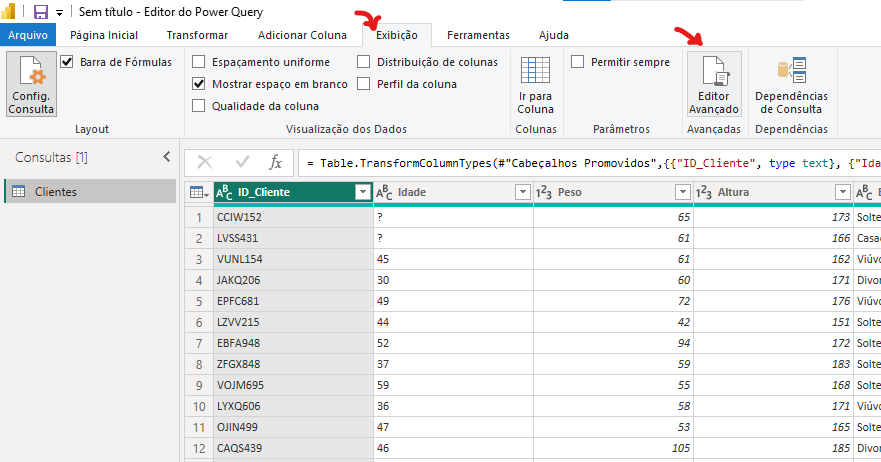

🗃️ Manipulação de Dados (Engenharia de Atributos)
Ao aplicarmos a manipulação de dados, vamos utilizar alguns conceitos de Engenharia de Atributos, caso queira aprender sobre Engenharia de Atributos, clique aqui: Ciência de Dados - Engenharia de Atributos.
Para a manipulação dos dados, será utilizado a linguagem M (Power Query Formula Language). Essa linguagem é essencial para o tratamento, transformação e preparação dos dados antes da modelagem e visualização.
Com a linguagem M, é possível realizar tarefas como:
- Limpeza de dados (remoção de valores nulos, duplicados, erros etc.)
- Transformações complexas (mesclagem de tabelas, criação de colunas personalizadas, transposição de dados)
- Automatização de etapas de ETL (Extract, Transform, Load)
- Enriquecimento dos dados com regras condicionais e parâmetros dinâmicos.
Para acessar a aba de manipulação com linguagem M, vá no PowerQuery, depois em 'Exibição' e então 'Editor Avançado': 
Conceitos Básicos Linguagem M
Vamos entender de forma rápida e objetiva alguns conceitos fundamentais da linguagem M, usada no Power BI.
A linguagem M é uma linguagem de programação funcional utilizada no Power Query para realizar transformações nos dados. Assim como outras linguagens, ela possui palavras reservadas, estruturas de controle e uma sintaxe própria.
🏷️ Principais palavras reservadas:
letein:
Esses dois termos são a base da estrutura de código em M.leté onde você declara as etapas e variáveis da transformação de dados.inindica qual será o resultado final, ou seja, o que será retornado após as operações.
💡 Pense da seguinte forma:
Primeiro, você "deixa" (let) as ações serem executadas em sequência.
Depois, informa (in) qual foi a última transformação que define o resultado final.
✍️ Sintaxe:
- No Power BI, cada linha de transformação dentro do
letdeve terminar com vírgula, exceto a última.
Se você esquecer uma vírgula, o Power Query apresentará um erro de sintaxe. - Após adicionar uma nova tarefa, não esqueça de modificar o
ine colocar a tarefa adicionada nele.
🔖 Sobre o uso de #:
- Quando você vê algo como
#“Nome da Etapa”, o símbolo#seguido de aspas é usado para referenciar nomes com espaços ou caracteres especiais.
Exemplo:
M#"Dados Transformados"
💬 Comentários na Linguagem M
Assim como em outras linguagens de programação, os comentários em M servem para documentar o código, facilitar o entendimento e organizar melhor as etapas de transformação.
A linguagem M permite dois tipos de comentários:
- Comentário de linha única:
Use dois sinais de barra (//) para escrever comentários em uma única linha.
// Esse é um comentário de linha.
- Comentário de múltiplas linhas:.
Use
/* para abrir e */para fechar o bloco de comentário
/*
Esse é
um Comentário
de múltiplas linhas.
*/
Manipulando Dados com M
Substituindo Valores
Cenário: Temos um dataset onde se tem alguns valores ausentes e foram identificados como '?', vamos então substituir esses valores:
// Substituindo valor
#"Valor Substituido" =
Table.ReplaceValue(#"Tipo Alterado",
"?", "45", Replacer.ReplaceText, {"Idade"})
EXPLICAÇÃO: Primeiro, vou dar o nome da operação a ser feito (
#"Valor Substituido"), do Pacote Table (Table.), irei usar uma função para substituir valores (ReplaceValue()), mas, vou fazer isso depois de uma operação anterior (#"Tipo Alterado"), irei substituir os valores com interrogração ("?") e irei substituir por quarenta e cinco ("45"), vou fazer essa substituição (Replace.ReplaceText) na coluna que tem esses valores ausentes ({"Idade"}).
ATENÇÃO: Depois disso, o in terá que tem última função feita, nesse caso #"Valor Substituido", ficaria assim:
in
#"Valor Substituido"
Removendo Colunas
CENÁRIO: Chegamos a conclusão que não queremos mais a coluna "Estado Civil".
Em nosso editor avançado, adicione:
//Removendo Coluna
#"Coluna Removida" =
Table.RemoveColumns(#"Valor Substituido",
{"Estado Civil"})
EXPLICAÇÃO: Vamos adicionar uma nova etapa (
#"Coluna Removida"), então, do pacote Table (Table.), vamos usar uma função para remover colunas (RemoveColumns()), mas isso será feito depois de uma outra etapa (#"Valor Substituido") e especificar qual coluna queremos remover ({"Estado Civil"}).
Adicionando Novas Colunas
CENÁRIO: Temos uma base de dados com uma coluna onde se tem o valor da compra sem o desconto (Valor Compra), e uma coluna do valor do desconto (Valor Desconto), porém, não temos uma coluna com o valor final.
// Adicionando Coluna
#"Coluna Adicionada" =
Table.AddColumn(#"Coluna Removida", "Valor Final",
each [Valor Compra] - [Valor Desconto])
EXPLICAÇÃO: Vamos adicionar uma nova etapa (
#"Coluna Adicionada"), onde iremos utilizar do pacote Table (Table.) uma função de adicionar uma nova coluna (AddColumn()), vamos fazer isso depois de uma etapa (#"Coluna Removida"), iremos dar o nome da nova coluna ("Valor Final"), dizendo que para cada linha (each), vamos realizar uma operação aritmética ([Valor Compra] - [Valor Desconto]) para setar os valores de cada linha.
OBS: Para reforçar, a palavra reservada each, que em inglês é 'cada', ou seja, para cada linha, faça algo.
O que fizemos aqui, é uma típica tarefa de Engenharia de Atributos.
Dividindo Coluna
CENÁRIO: Temos uma coluna em nossa base de dados que armazena os ID's dos clientes ("ID_Cliente"), os ID's são compostos por letras e números (EX: CCIW152, LVSS431, VUNL154). Ao observar, é possível ver que temos duas informações em uma só coluna, 4 letras e 3 números. Vamos separar essas duas informações em duas colunas diferentes.
Vamos criar uma função para separar essas informações:
// Dividindo Coluna
#"Dividir Coluna Pela Posição" =
Table.SplitColumn(#"Coluna Adicionada",
"ID_Cliente", Splitter.SplitTextByPositions({0, 4}, false),
{"ID_Cliente.1", "ID_Cliente.2"}),
#"Coluna Dividida" =
Table.TransformColumnTypes(#"Dividir Coluna Pela Posição",
{{"ID_Cliente.1", type text},
{"ID_Cliente.2", Int64.Type}}),
EXPLICAÇÃO:
Primeira Etapa: Vamos criar uma nova etapa (
#"Dividindo Coluna Pela Posição"), então do pacote Table (Table.) vamos usar uma função para dividir colunas (SplitColumn()), vamos fazer isso depois da etapa anterior (#"Coluna Adicionada"), vamos falar qual coluna queremos dividir ("ID_Cliente"), vamos então chamar uma função para isso dividir por uma posição específica (Splitter.SplitTextByPositions()), que será a posição 0 até a posição 4 ({0, 4}) e então será colocado em uma primeira coluna ({"ID_Cliente.1",), a partir de 4 tudo o que ele encontrar vai ser colocado para uma segunda coluna ("ID_Cliente.2"}).Segunda Etapa: Depois da etapa anterior, precisamos dizer o tipo das novas colunas criadas, vamos criar uma etapa para isso (
#"Coluna Dividida"), então, do pacote Table (Table.) vamos usar uma função para transformar o tipo das colunas (TransformColumnTypes()), vamos fazer isso depois da etapa anterior (#"Dividindo Coluna Pela Posição"), então vamos selecionar a primeira coluna ({{ID_Cliente.1},) e falar que o tipo dela será texto (type text,) e então selecionar a segunda coluna ({"ID_Cliente.2",) como tipo número inteiro (Int64.Type}}).
OBS: Isso é extremamente útil, algumas empresas adotam como prática adicionar ao ID do cliente a data de aniversário, ou então, data de início do cliente na empresa, dessa forma, podemos obter uma nova informação a partir de uma coluna já feita.
Renomeando Colunas
CENÁRIO: Depois de criarmos as novas colunas, precisamos renomear elas para que fiquem mais entendíveis.
Vamos criar uma nova etapa para renomear as colunas:
// Ajustando Nome de Coluna
#"Colunas Renomeadas" =
Table.RenameColumns(#"Coluna Dividida",
{{"ID_Cliente.1", "Codigo"},
{"ID_Cliente.2", "ID"}})
EXPLICAÇÃO: Vamos criar uma nova etapa para renomear as colunas (
#"Colunas Renomeadas"), então, do pacote Table (Table.) vamos usar a função de renomear colunas (RenameColumns()), essa tarefa será executada depois da última etapa (#"Coluna Dividida"), então, vamos dizer qual é a coluna a ser renomeada ({{"ID_Cliente.1",) e então o novo nome ("Codigo"},) e fazer o mesmo para a segunda coluna ({"ID_Cliente.2", "ID"}})).
Colunas Condicionais
CENÁRIO: Temos uma coluna em nossa base de dados que indica o tipo do cliente (Tipo de Cliente), e então queremos que para cada tipo do cliente, ele tenha um tipo de desconto diferente, vamos então criar uma coluna representando essa regra de negócio.
Vamos criar essa etapa:
// Coluna Condicional
#"Coluna Condicional Adicionada" =
Table.AddColumn(#"Colunas Renomeadas", "% Desconto Especial",
each if [Tipo de Cliente] = "Bronze" then 5
else if [Tipo de Cliente] = "Prata" then 10
else if [Tipo de Cliente] = "Ouro" then 15
else if [Tipo de Cliente] = "Diamante" then 20
else 0)
EXPLICAÇÃO: Vamos criar uma nova etapa (
#"Coluna Condicional Adicionada"), onde iremos utilizar do pacote Table (Table.) uma função que vai adicionar uma nova coluna (AddColumn()), vamos fazer isso depois da etapa anterior (#"Colunas Renomeadas",), então setamos o nome dessa nova coluna ("% Desconto Especial") e passamos as regras para os valores, para cada valor (each), se (ifeelse if) o tipo do cliente for algum em específico ([Tipo de Cliente] = "Bronze"), ele irá receber um determinado valor de desconto (then 5), se o tipo dele não for nenhum dos que foram passados para comparação, é atribuiudo um valor padrão (else 0)).
Ajustando Escala dos Dados
Essa atividade é muito típica para preparação dos dados para serem consumidos em Aprendizado de Máquina. Uma coluna que tem muitos valores, pode ter os valores com escalas diferentes (Unidade, Dezena, Centena, Milhar), diversos algoritmos de Machine Learning esperam receber os algoritmos na mesma escala, então, toda vez que ele for usado, sempre vai esperar os valores na mesma escala, então, essa tarefa de Engenharia de Atributos se torna essencial.
CENÁRIO: Em nossa base de dados, temos uma coluna que se tem os limites de créditos dos clientes (Limite de Credito), vamos então deixar os dados na mesma escala.
Criando a etapa:
// Ajustando a escala dos dados com Transformação Logarítmica
#"Logaritmo de Base 10 Calculado" =
Table.TransformColumns(#"Coluna Condicional Adicionada",
{{"Limite de Credito", Number.Log10, type number}})
EXPLICAÇÃO: Vamos criar uma nova etapa (
#"Logaritmo de Base 10 Calculado"), utilizando do pacote Table (Table.), uma função que irá transformar uma coluna (TransformColumns()), vamos fazer isso depois da etapa anterior (#"Coluna Condicional Adicionada",), vamos selecionar a coluna a ser modificada ({{"Limite de Credito",), do pacote Number (Number.) vamos usar uma função que irá fazer a escala logarítmica (Log10,) e o resultado será do tipo numérico (type number}})).
OBS: Caso a função não consiga transformar os valores, ele irá retornar um NaN (Not a Number), ou seja, um valor ausente.